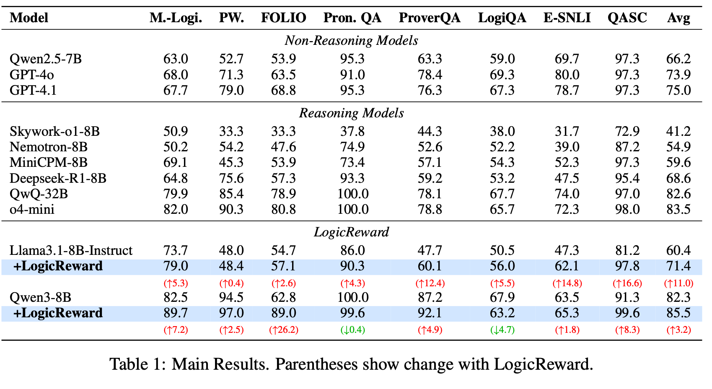
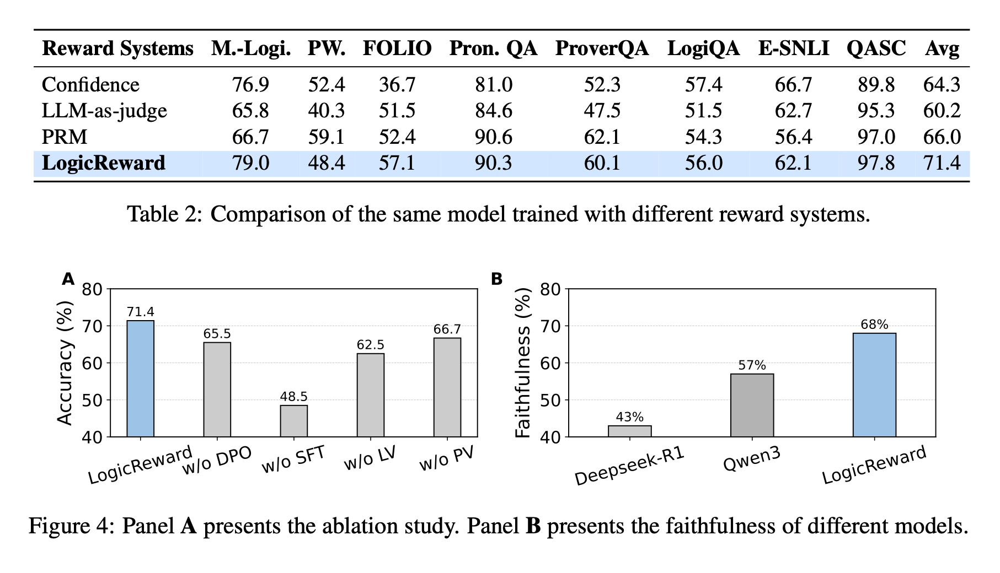

📈 Performance
- 🚀 Consistent gains across benchmarks:
- LogicReward improves LLaMA-3.1-8B by +11% and Qwen-3-8B by +3.2% on average across 8 logical reasoning and natural language inference benchmarks.
- Using an 8B model, we outperform strong baselines such as GPT-4o and o4-mini by +11.6% and +2%.
- 🏆 Outperforms existing reward signals: LogicReward demonstrates stronger performance than alternative reward functions, including confidence-based rewards, LLM-as-a-Judge, and Process Reward Models (PRMs).
- 🌍 Stronger out-of-distribution generalization:
Models trained with LogicReward generalize better to OOD tasks such as:
- Commonsense reasoning (CommonsenseQA)
- Mathematical reasoning (GSM8K)
- Deductive reasoning (BoardGameQA)
- 🧠 Faithful reasoning beyond accuracy: LogicReward improves not only final-task accuracy, but also the faithfulness, logical consistency, and rigor of intermediate reasoning steps.



BibTeX
@article{logicreward2025,
title = {Training LLMs with LogicReward for Faithful and Rigorous Reasoning},
author = {Jundong Xu, Hao Fei, Huichi Zhou, Xin Quan, Qijun Huang, Shengqiong Wu, William Yang Wang, Mong-Li Lee, Wynne Hsu},
journal = {arXiv preprint arXiv:TODO},
year = {2025}
}Placeholder: replace with the official BibTeX from arXiv / venue.